Rouse Build Guide
Print, wire and assemble your own Rouse alarm clock
For Rouse firmware 1.0.0 · November 2026
Contents
What you’ll build
Rouse is an alarm clock built around a ready-made ESP32 touch-screen board, a 3D-printed case, a small speaker, an optional snooze bar and an optional backup battery. There is no circuit board to make: the wiring is two small switches and three plugs. Plan on less than an hour, plus printing time.
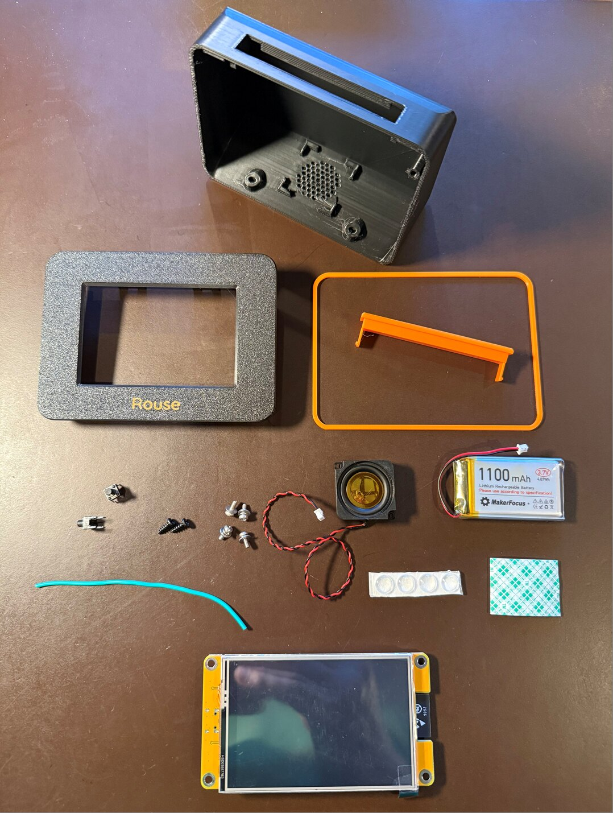
This guide covers three boards, and other boards that are the same size with the same mounting holes and screen position. They all run the same Rouse firmware:
| Board | Case | Notes |
|---|---|---|
| Freenove FNK0104N, 3.5” | Rouse case | Glass touch screen, room for 64 photos. The board used in the pictures. |
| CYD (Hosyond / LCDwiki E32R35T), 3.5” | Rouse case | Pressure-sensitive touch screen (comes with a stylus); room for 3 photos. |
| Waveshare ESP32-S3-Touch-LCD-3.5, in Waveshare’s enclosure | Rouse case, Waveshare version | No wiring and no snooze bar: tap the case to snooze. The enclosure fits into a Rouse case made for it (see The Waveshare board). |
The Freenove and CYD boards have the same size, mounting holes and screen position, so one Rouse case fits both. It comes in three versions:
- With snooze bar opening and stylus holder: for the CYD, whose stylus has a place to live.
- With snooze bar opening: for any board.
- Without snooze bar opening: touch screen only; no switches to wire.
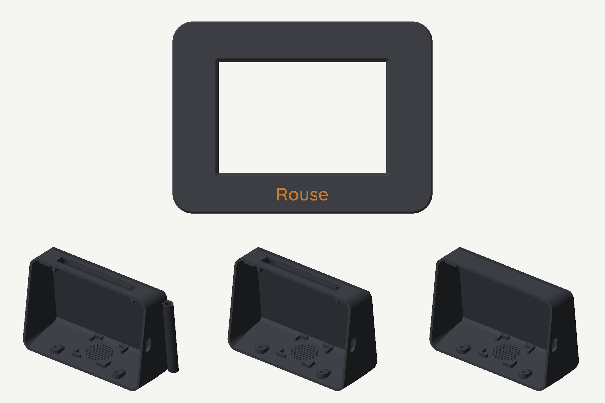
Parts
One clock needs:
| Part | Qty | Notes | Example |
|---|---|---|---|
| Display board | 1 | One of: Freenove ESP32-S3 Display 3.5” (FNK0104N); Hosyond 3.5” ESP32 touch screen (CYD); Waveshare ESP32-S3-Touch-LCD-3.5 | Freenove · CYD · Waveshare |
| Tactile switch, 6 × 6 mm base, 8 mm stem (6×6×8) | 2 | For the snooze bar. Skip for the case without snooze bar opening, and for the Waveshare. | Switches |
| Speaker, 8 Ω 2 W, 28 × 28 mm, with 2-pin 1.25 mm plug | 1 | Plugs straight into the board. | Speaker |
| LiPo battery, 3.7 V 1100–2000 mAh, with 2-pin 1.25 mm plug | 1 | Optional backup; bigger runs longer. Up to about 50 × 34 × 10 mm fits. The board charges it. See Battery for run times. | Battery |
| Pan head screws, M2.5 × 6 | 4 | Hold the board in the bezel. | M2.5 screws |
| Self-tapping screws, M3 × 8 | 2 | Close the case from underneath. | M3 screws |
| Adhesive bumper pads, 8 mm | 4 | Feet. | Bumpers |
| Double-sided foam tape, about 50 × 30 mm | 1 piece | Holds the battery. | Foam tape |
| Hook-up wire, 22 AWG stranded | about 20 cm (8”) | Between the two switches. | Wire |
| Filament (PLA or PLA+) | about 100 g | One main color and one accent color. |
The links are examples of what was used for the clock in this guide; equivalent parts work just as well.
The cable for the snooze bar comes with the board. The Freenove and CYD boards include short cables with plugs (pigtails) for their small connectors. One of them connects the snooze bar to the board.
Tools
- 3D printer (any; a two-color printer, such as one with an AMS, can print the name on the bezel in the accent color)
- Soldering iron and solder
- Small Phillips screwdriver
- Wire cutters and strippers
- Hot glue gun (or a small piece of foam tape) for the speaker
- A computer with Chrome or Microsoft Edge and a USB-C data cable, to install the firmware
Printing the case
Download Rouse-case-v1.1.3mf (Bambu Studio and OrcaSlicer) or the STL files (any slicer). The 3MF has every part on its own plate, already turned the right way up:
| Plate | Part | Color |
|---|---|---|
| 1 | Case with snooze bar opening and stylus holder | Main |
| 2 | Case with snooze bar opening | Main |
| 3 | Case without snooze bar opening | Main |
| 4 | Bezel, with the “Rouse” name inlaid | Main, name in accent |
| 5 | Bezel, with the name engraved | Main |
| 6 | Band ring and snooze bar | Accent |
| 7–10 | The same parts for the Waveshare version: case, bezel (inlaid or engraved name), band ring | as above |
Print one case (plates 1–3), one bezel (plate 4 or 5), and plate 6. If your case has no snooze bar opening, delete the snooze bar from plate 6 before printing.
- Material: PLA or PLA+, 0.2 mm layers, 3 walls, 15 % infill. The clock in this guide is charcoal with an orange accent.
- Supports: none except two small areas the 3MF already marks: the top edge of the USB opening and the front edge of the snooze bar opening. With the STL files, add supports at those two places yourself.
- The name: plate 4’s bezel prints face down with “Rouse” in its first layers as a second color, for printers that can change filament (such as an AMS). On a single-color printer, use plate 5: the name is engraved 1 mm into the face and reads by its shadow.
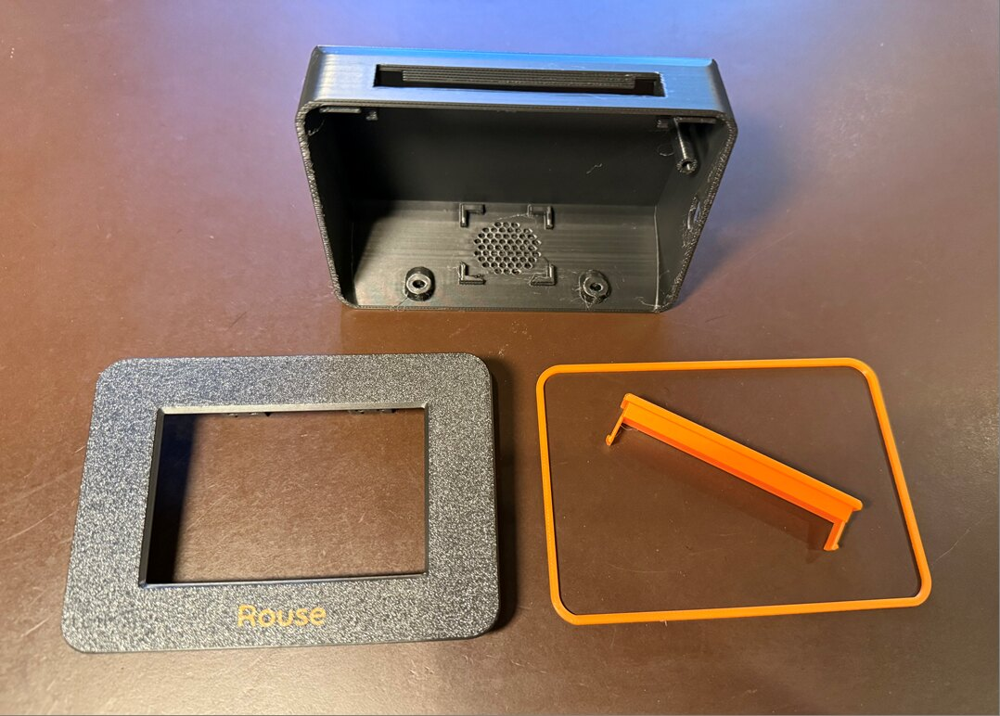
Check the stylus holder (plate 1 only). The CYD’s stylus should slide into the holder and stay put. Printers differ a little; if it is too tight, run a 13/64” (5.2 mm) drill bit through it by hand.
Wiring
All the connections plug into the back of the board except the snooze bar, which needs a few solder joints.
Snooze bar switches
Skip this if your case has no snooze bar opening.
Look at a switch from below. Its body is a rectangle, with two pins coming out of each of the two long sides:
- The two pins on the same side (the ones closer together) are the two sides of the switch contact. Pressing the button connects them.
- The pins straight across from each other, on opposite sides, are connected inside the switch. They let the connection pass through to the next switch.
- Push the two switches into the switch shelves on the inside of the bezel’s top edge, button facing up, pins pointing left and right.
- Jumpers: with two short pieces of wire, join the inner pins of the left switch to the matching inner pins of the right switch: top pin to top pin, bottom pin to bottom pin (the green wires in the diagram). The switches are now side by side (in parallel), so either one works the snooze.
- Board cable: the boards come with a short cable with a plug (pigtail) for their small connectors. Cut it to length and solder its snooze pin wire and its GND wire to the two outer pins of the left switch, one wire to each pin. Leave the cable’s other wires uncut but tape or heat-shrink their ends, in case you want them later.
- Plug the cable into the board’s connector (see the table). With the cables that come with the boards, the wires to use are the green and black ones: on the Freenove, green is IO45 and black is GND; on the CYD, black is IO32 and green is GND. If your cable’s colors differ, match the wires to the pin labels printed next to the connector.
| Board | Connector | Snooze pin | Ground |
|---|---|---|---|
| Freenove | 4-pin connector labeled 3.3V / GND / IO46 / IO45 | IO45 | GND |
| CYD | 4-pin I2C connector labeled 3.3V / IO32 / IO25 / GND | IO32 | GND |
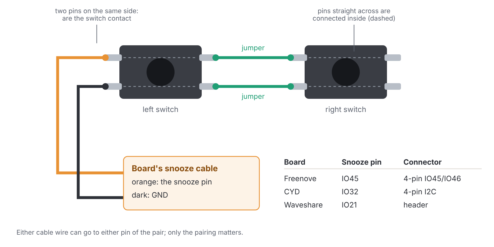
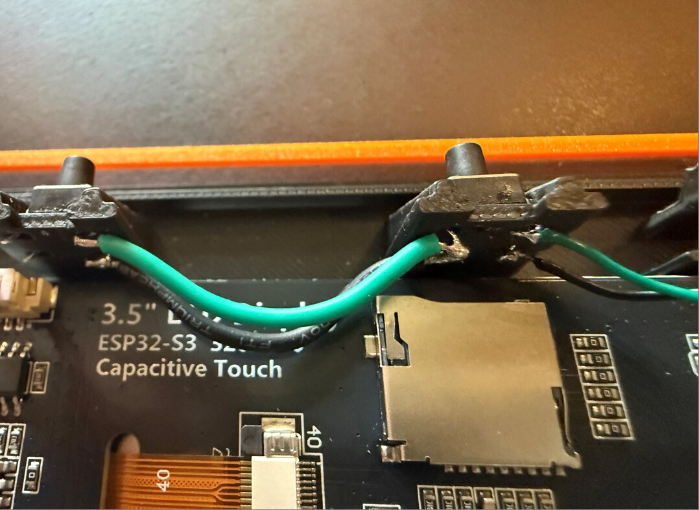
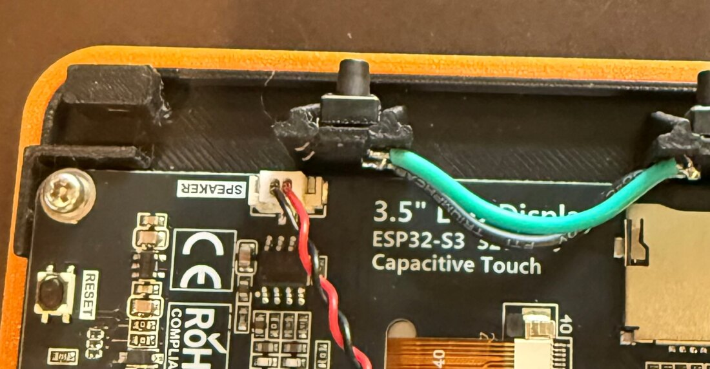
It doesn’t matter which of the two cable wires goes to which outer pin. If the snooze bar doesn’t respond later, the clock’s web page shows when it sees a press (see Testing).
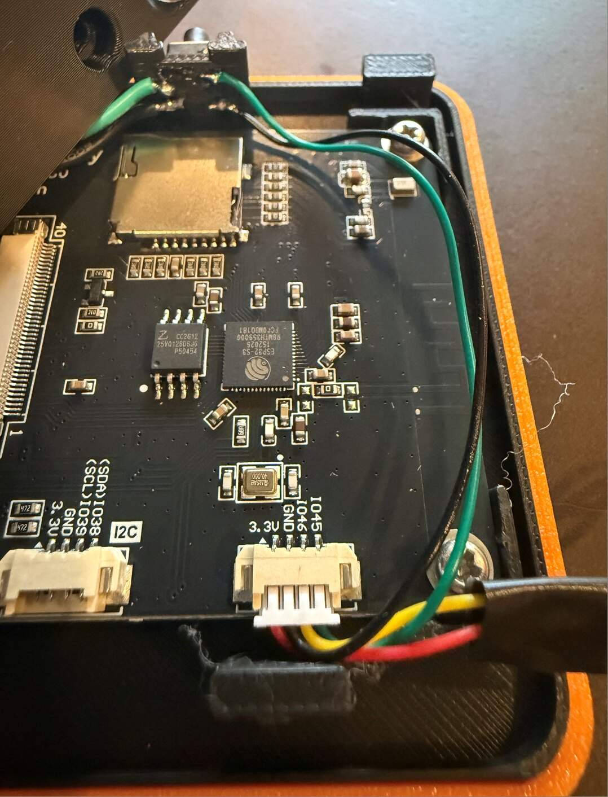
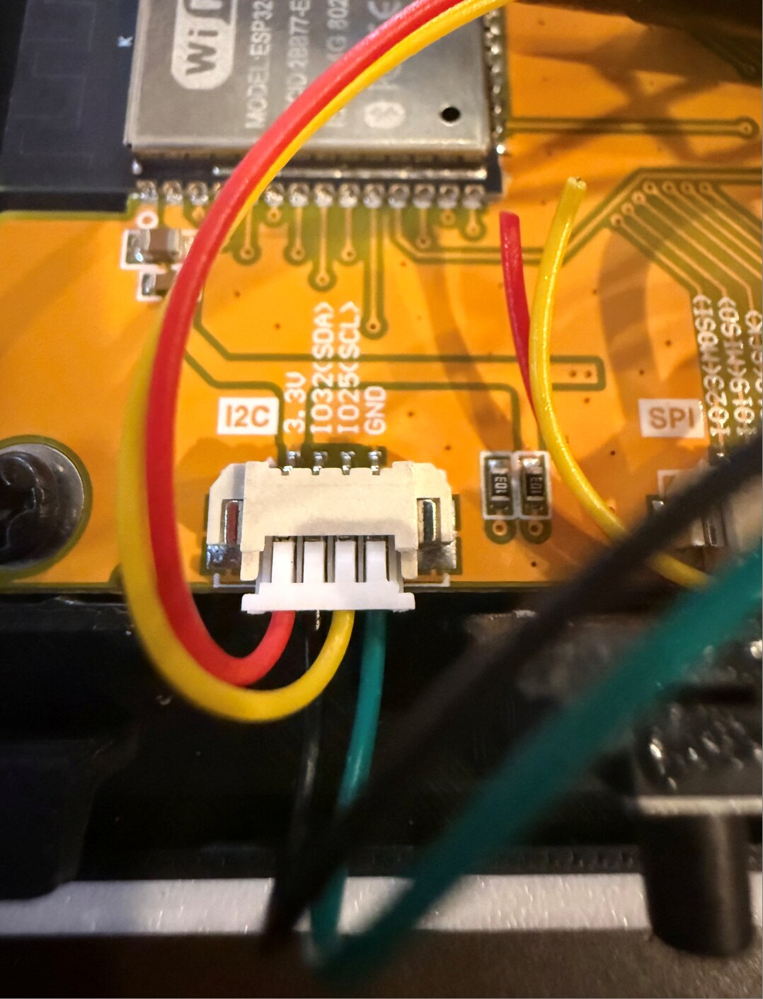
Speaker
The speaker’s plug goes into the board’s SPEAKER connector. It only fits one way.
Battery
The battery keeps the clock running through a power outage; the board charges it from USB. On the CYD, a 1100 mAh battery runs the clock for about 7½ hours, and a 2000 mAh one about twice as long. Other boards may draw a little more. The clock limits its brightness on battery to make it last (see the Operating Manual).
Check the polarity before plugging in the battery. Small batteries with 1.25 mm plugs don’t all use the same wiring. Look for the + and − marks printed next to the board’s BAT connector: the battery’s red wire must go to +. If it’s the other way around, don’t plug it in; swap the two wires in the plug (lift the tiny tab on the plug and slide each wire out) or use a different battery. Plugging a battery in backwards can damage the board.
Handle the battery gently: don’t bend, puncture or crush it, and keep the bare plug pins away from metal.
Assembly
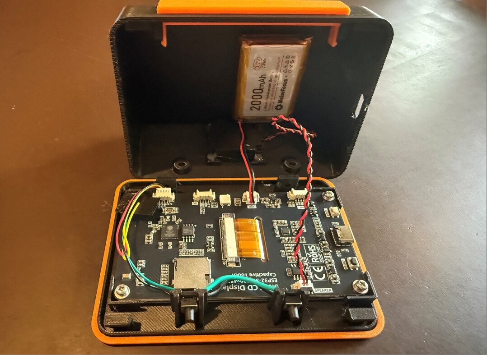
- Board into the bezel. Lay the bezel face down on a soft cloth. Set the board in it, screen down, with the USB port toward the side with the USB opening in the case. Screw it to the four posts with the M2.5 × 6 screws. Snug, not tight; the screws hold the board in place.
- Snooze cable. Plug the snooze cable into the board (see Wiring) and route it along the edge so it won’t be pinched.
- Speaker. In the case body, set the speaker face down in its cradle on the base, over the grille holes. Hold it with a few dots of hot glue at the corners (or a piece of foam tape). Plug it into SPEAKER.
- Battery. Stick the battery to the inside of the back wall with the foam tape, plug end toward the bottom. Check the polarity (above), then plug it into BAT.
- Snooze bar. Push the snooze bar into the slot on top of the body from outside until its two hooks click under the catches inside.
- Band ring. Lay the band ring over the bezel’s lip.
- Close the case. Hook the bezel’s two top hooks behind the rails under the top of the body, then swing the bottom of the bezel in. Make sure no wire is caught between the parts.
- Screws. Turn the clock over and drive the two M3 × 8 self-tapping screws up through the holes in the base into the bezel. They cut their own thread: firm, but stop as soon as they’re snug.
- Feet. Stick the four bumper pads into the round dimples on the base.
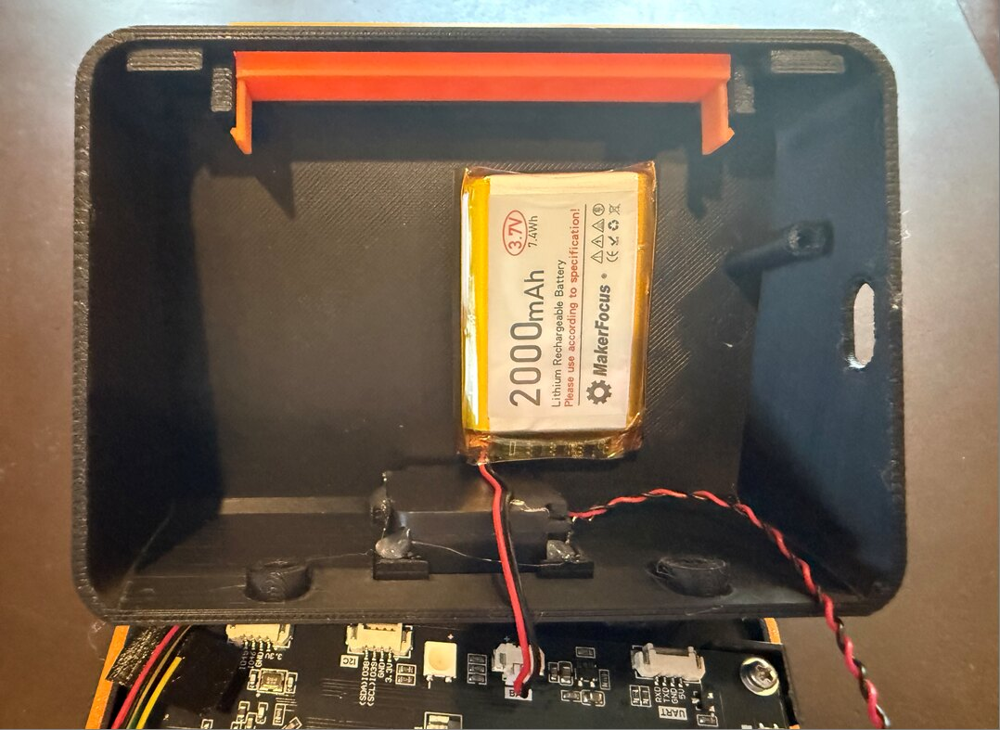
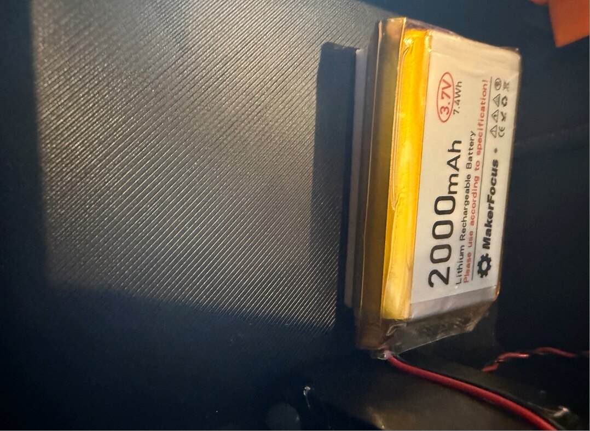
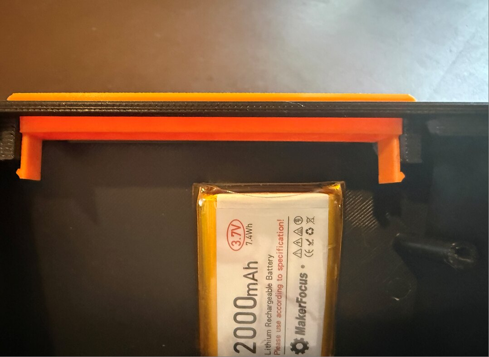
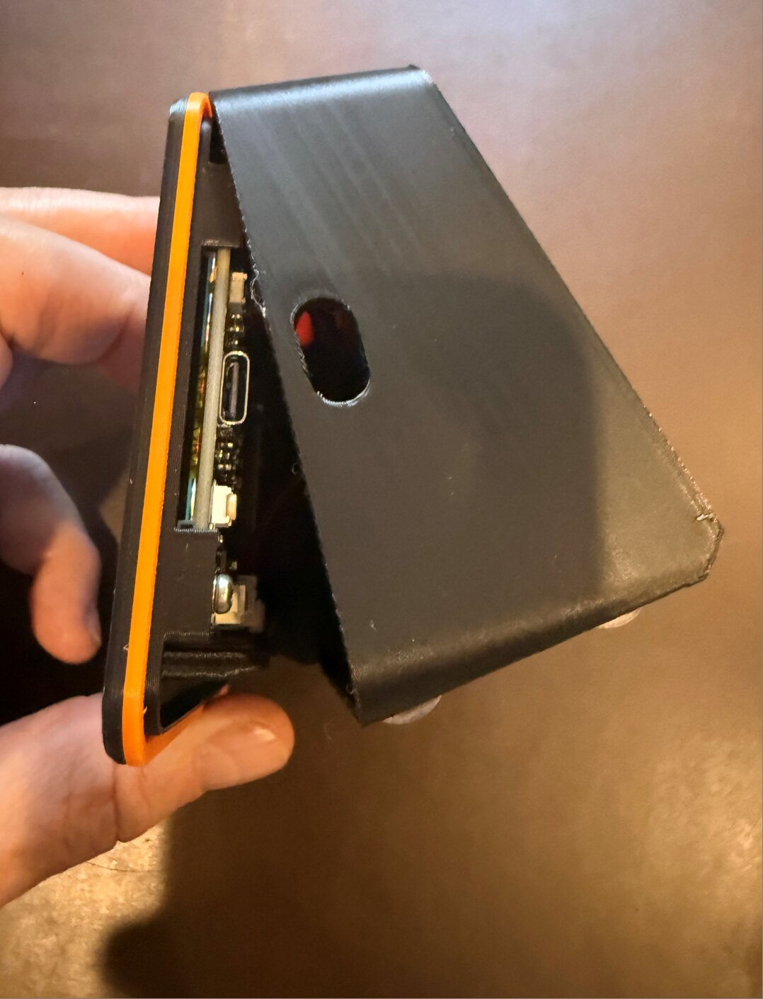
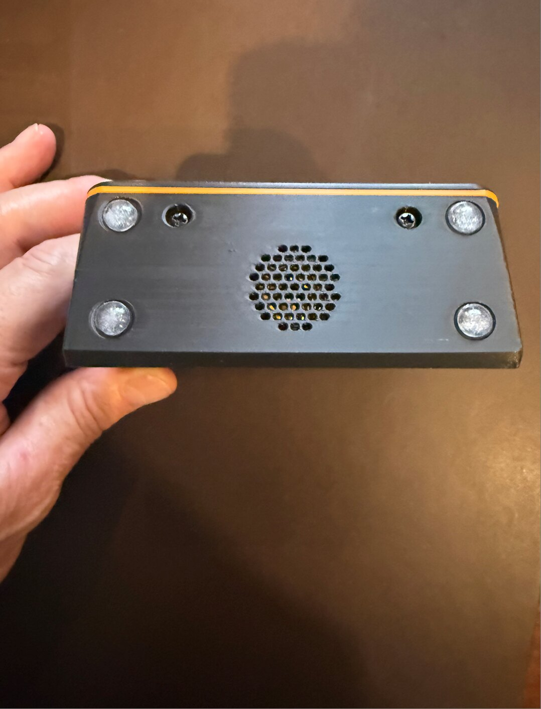
Installing the firmware
The first install goes over USB from a computer. After that, the clock updates itself from its own web page.
- Plug the board into the computer with a USB-C data cable. The case can be closed already; the USB port is reachable from the side.
- In Chrome or Microsoft Edge, open the Rouse web installer at rouseclock.com/flasher.
- Click Install under your board, choose the board’s port in the list, and click Connect. Then Install.
- Wait for the progress to finish (about a minute). The board restarts and shows WiFi setup.
If it doesn’t connect, the installer page lists what to try. The most common fixes: use a different (data) USB cable, or put the board in download mode by holding BOOT, pressing and releasing RESET, then releasing BOOT.
Prefer the command line? Each release also has a FULL firmware file for each board (for example Rouse-1.0.0-Freenove35-FULL-flash-at-0x0.bin), which any ESP32 flashing tool such as esptool can write at address 0x0.
First power-up
Setting up
Follow First setup in the Rouse Operating Manual: join the clock’s Rouse- WiFi network with your phone, pick your home WiFi, then open http://rouse.local.
If the picture looks wrong, it’s quick to fix in the web page under Settings → Hardware: Invert colors for a photo-negative look, Swap red and blue if red shows as blue, Rotate display 180° if it’s upside down. On the CYD, touch calibration runs by itself the first time; tap each target as it appears.
Testing
- Snooze bar. In Settings → Hardware, turn on Snooze button (the pin is already correct for your board). Press the snooze bar: the line under the switch shows the press. Press each end of the bar; both should register.
- Sound. In Alarms, add an alarm and tap Ring it now (test). Snooze it with the bar, then hold the bar to stop it.
- Battery. Settings → Status shows the battery level. Unplug USB for a few minutes: the clock keeps running.
Your Rouse is ready. Everything else is in the Operating Manual.
Troubleshooting the build
The computer doesn’t see the board. Use a different USB-C cable (many only charge) and a different USB port. On Windows, the CYD may need the CH340 USB driver from the board maker.
The install stops with “Failed to connect”. Hold BOOT, press and release RESET, release BOOT, and try again. On the Freenove and Waveshare, a second try after reloading the page often works.
The screen stays dark after installing. Press RESET once, or unplug and replug the board.
No sound. Check the speaker plug is fully in the SPEAKER connector. Test with Ring it now at a high volume.
The snooze bar does nothing. Check that Snooze button is on in Settings → Hardware and the Button pin matches your wiring (IO45 on the Freenove, IO32 on the CYD), then watch the line under it while pressing. If no press shows: check the solder joints, and that the cable goes to the two pins on the same side of the left switch.
The snooze bar only works at one end. A jumper between the switches is loose or goes to the wrong pin; each jumper joins matching pins (top to top, bottom to bottom).
No battery level. Check the battery is plugged into BAT and the polarity is right. A completely empty battery may take a while to show up after charging starts.
The case won’t close. A wire is in the way, usually the battery or speaker lead at the bottom. Reroute it along the side wall.
The bezel is loose. Check both top hooks are behind the rails and both M3 screws are snug.
Still stuck? Email support@tuscanygroup.com. A copy of the clock’s log (Settings → Diagnostics log → Copy log) helps a lot.